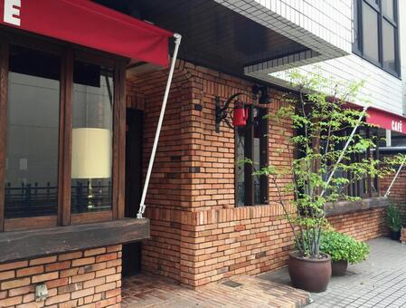
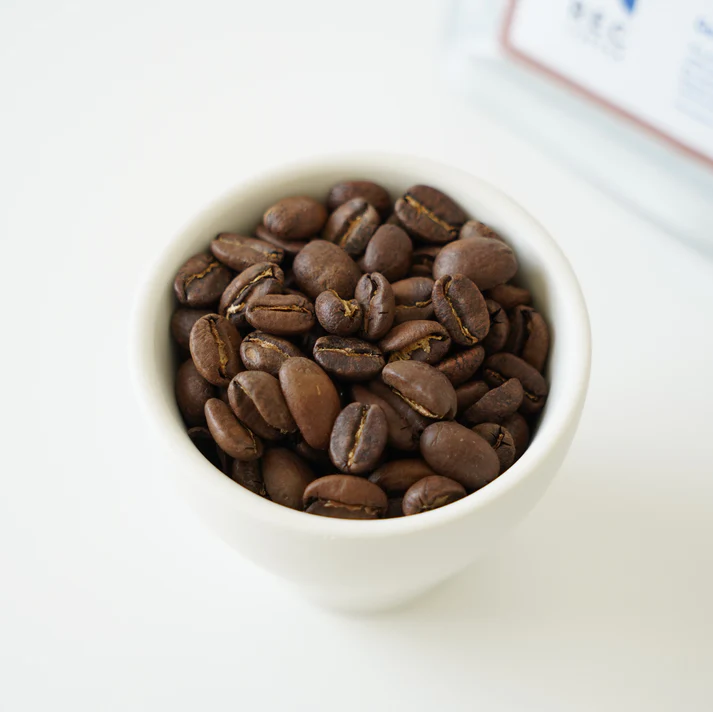
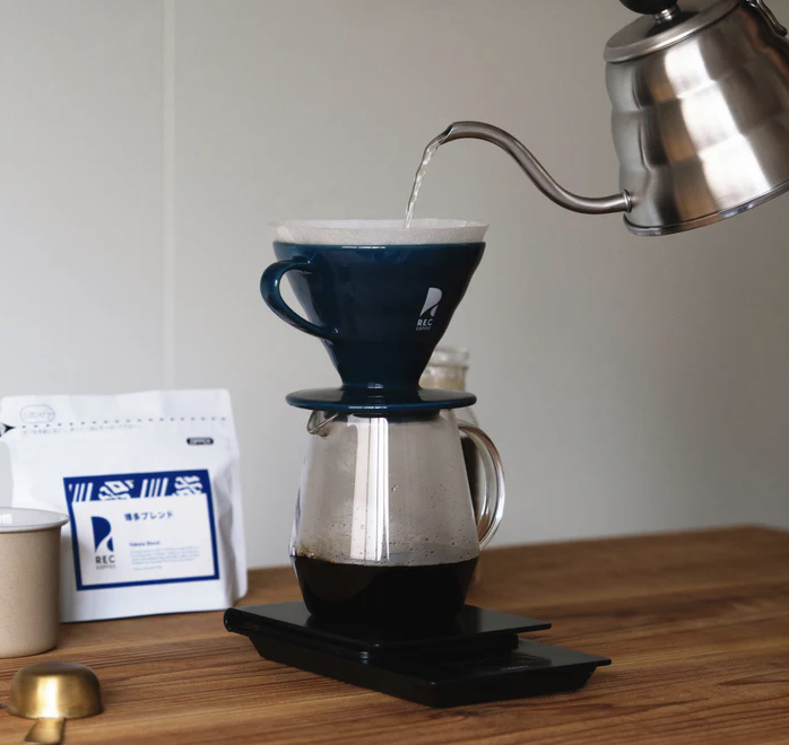
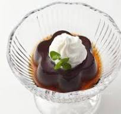
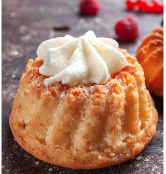
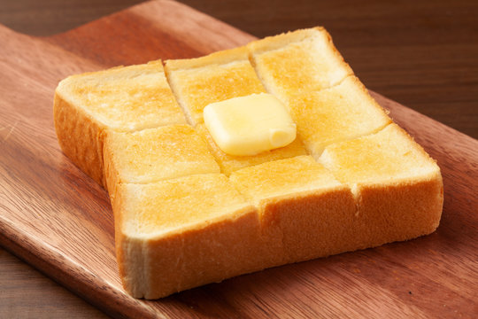
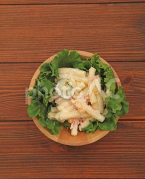

福岡・薬院の路地裏にある小さな一軒家喫茶
福岡・薬院の路地裏にある小さな一軒家喫茶

「珈琲 燈」は、福岡・薬院の路地裏にある小さな一軒家喫茶です。 店名は創業者である父がつけたもの。 「一杯のコーヒーが、その人の一日に小さな灯りになれば」という想いが、 今も変わらずこの店に流れています。
12席のこぢんまりとした店内には、開店当初から使い続けている カウンターとテーブルがあります。古いけれど、それがかえって落ち着くと 言ってくださるお客様が多くて。
国内外の農園から、その季節に最も良い豆を少量ずつ仕入れています。 豆によって抽出温度と時間をすべて変える。それがマスターのこだわりです。

ゲイシャ
華やかな香りとすっきりした飲み口。ゆっくり味わいたい特別な一杯です
¥1,200
エチオピア
果実感のある香りとやさしい酸味。コーヒーの奥深さを感じられます。
¥950

燈ブレンド
苦みと甘みのバランスが良い定番の一杯。迷ったらまずはこちら。
¥650

コーヒーゼリー
ほろ苦いゼリーにやさしい甘さ。コーヒーとの相性も抜群です。
¥550
自家製プリン
昔ながらのしっかり食感。少し苦めのカラメルがよく合います。
¥500

季節のケーキ
その時期ならではの甘いひと皿。コーヒーと一緒にどうぞ。
¥650
営業開始 〜 11:00
朝の時間だけの特別メニュー。香ばしいトーストとコーヒーで、 ゆったりした一日の始まりを。
モーニングセット
トースト・卵・サラダ・コーヒーの定番セットです。
¥800

トースト単品
シンプルに味わえる朝の一皿。バターの香りを楽しめます。
¥350

サラダ単品
朝にちょうどよい軽やかなサラダ。セット追加にもおすすめです。
¥300
住所：福岡県福岡市中央区薬院2丁目16-1
営業時間：月〜金 8:00–19:00 / 土・日 9:00–18:00
定休日：火曜日